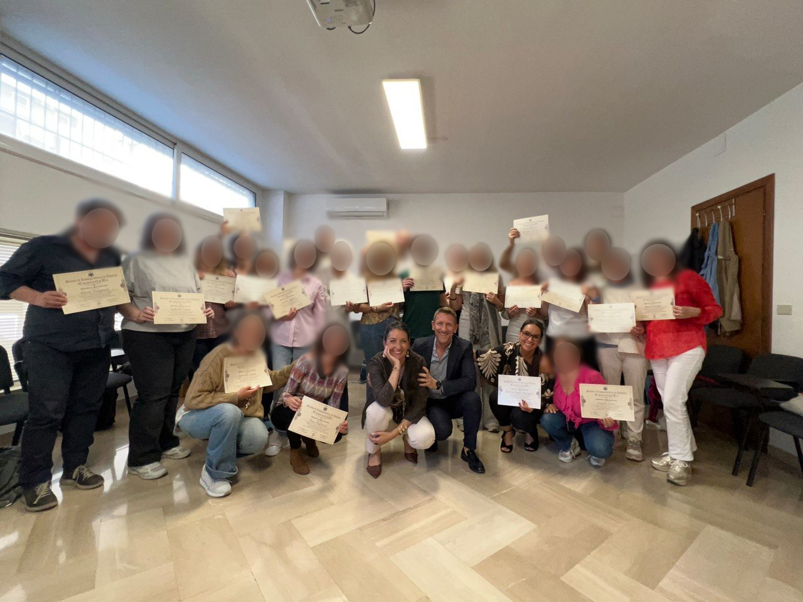
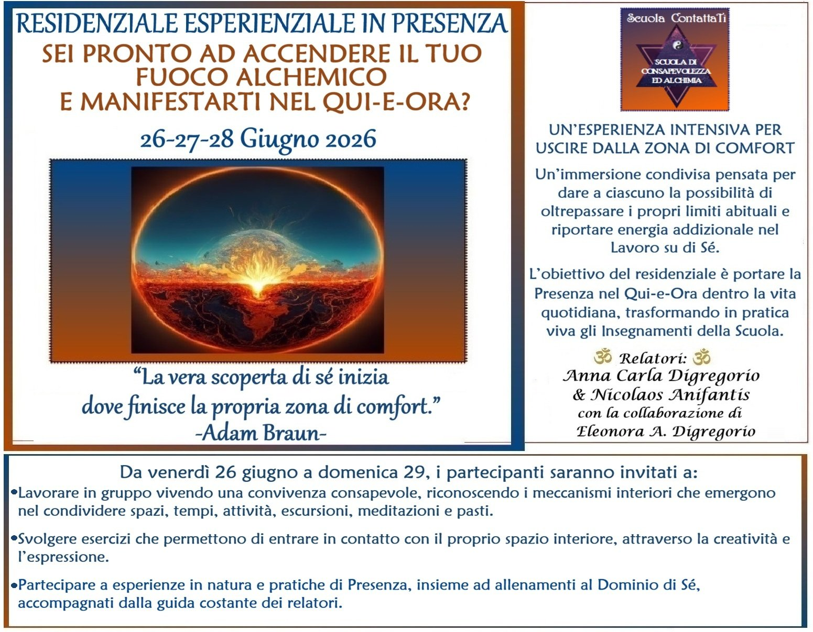
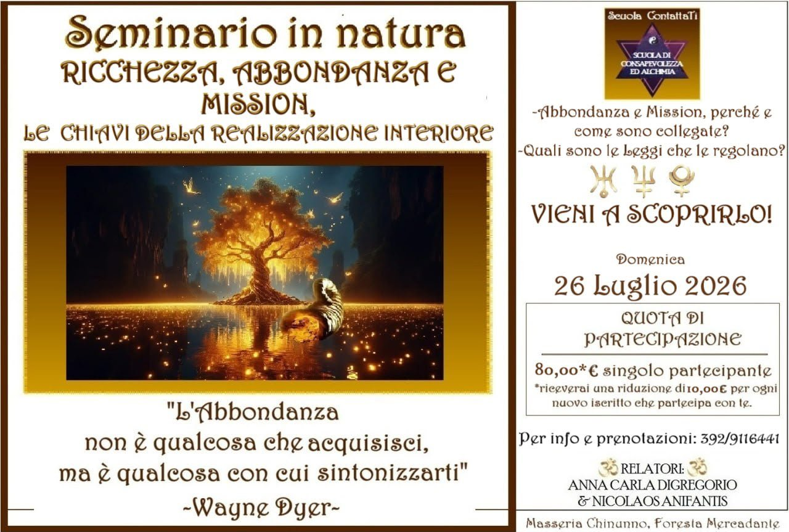

Chi siamo
Una scuola orientata al risveglio della coscienza e alla conquista della padronanza di sé. Il nostro percorso integra Antichi Insegnamenti, Alchimia e le 96 Leggi Universali per riconnetterci con la dimensione più profonda dell'essere: l'Anima.
Il nostro punto di partenza è il più antico degli insegnamenti: Γνῶθι Σεαυτόν — Conosci te stesso. Gli antichi lo incisero sul tempio di Delfi perché sapevano che senza conoscenza di sé non esiste vera libertà. Viviamo per lo più addormentati: reagiamo meccanicamente, guidati da condizionamenti e paure che scambiamo per scelte libere.
Non esiste uomo più schiavo di colui che falsamente si crede libero.
— Johann Wolfgang von Goethe
Continua a leggereMostra meno
La via del Conosci te stesso è una via di libertà. L'alchimia spirituale ci insegna a trasmutare ciascuno dei propri difetti nella sua qualità opposta — il piombo in oro — trasformando ciò che è meccanico in ciò che è consapevole.
Chi siamo, in profondità? Se ci osserviamo con sincerità, scopriamo di non essere un blocco unico ma una pluralità di voci: come una matrioska affollata di personaggi che si alternano al timone della nostra nave. Uno dice "sì", l'altro frena, un terzo giudica, un quarto fugge. Noi crediamo di scegliere, ma spesso è solo il personaggio più rumoroso a decidere, mentre le parti più silenziose e ferite restano sommerse.
Il vero lavoro, allora, è quello di un direttore d'orchestra: conoscere ogni voce, ogni strumento (come funziona, quando si attiva, cosa produce) e imparare a farli suonare insieme, in una sinfonia coerente con il nostro essere più autentico. L'obiettivo non è eliminare parti di noi, ma integrarle. Individuo, dal latino, significa "non diviso": qualcosa di frammentario che impariamo a riunificare. Solo allora potremo vivere una vita congruente con noi stessi e agire da dentro: l'enérgheia di Aristotele, l'atto puro dell'azione connesso all'essere. La vera libertà è questa: scegliere come rispondere a ciò che accade.
La Scuola nasce per offrire gli strumenti di questo risveglio. Non un sapere da accumulare: una pratica quotidiana di osservazione, presenza e lavoro su di sé che permetta di diventare padroni della propria carrozza anziché esserne trascinati. È un laboratorio nel senso più antico del termine, dal latino labor, fatica orientata e consapevole; una fatica dello spirito, in cui la volontà dell'uomo si unisce alla richiesta al cielo. Viviamo in un'epoca in cui temiamo che l'intelligenza artificiale possa sfuggire al nostro controllo; eppure è esattamente ciò che è già accaduto, da millenni, con la nostra intelligenza organica: la macchina biologica ha preso il comando, e l'Anima non riesce più, da sola, a disinserire il pilota automatico. Riallineare il proprio sguardo a quello dell'Anima è il primo atto di libertà.
Ciò che all'inizio sembra solo un allenamento a contrasto della meccanicità, a un certo punto diviene un'attitudine naturale: quel seme ha attecchito ed è diventato pianta vivente in noi. Per questo esiste la Scuola: non per dare risposte, ma per fornire gli strumenti con cui ciascuno possa trovare le proprie.
 Antichi Insegnamenti
Antichi Insegnamenti
Il percorso attinge da tradizioni diverse: Scienza Iniziatica, Quarta Via di Gurdjieff, Magia Ermetica, Kabbalà, Enneagramma, Antroposofia, Teosofia, Buddismo, Taoismo, Sciamanesimo. Lingue differenti per dire la stessa cosa: dall'OM induista al Logos giovanneo, al centro c'è sempre un suono creativo che dà forma alla vita. L'uomo ne è custode e co-creatore. Il suo compito è riscoprire quel programma dell'anima, più antico e profondo di qualsiasi condizionamento acquisito.
 Struttura e accesso
Struttura e accesso
I seminari si svolgono in presenza a Bari e online, per permettere a chiunque di accedere agli insegnamenti, indipendentemente da dove ci si trova.
Il percorso si articola in 7 anni (3 di base + 4 avanzati), con incontri domenicali a cadenza regolare. Ogni anno costruisce sul precedente, accompagnando lo studente in una trasformazione progressiva e radicata.
Video di presentazione
Uno sguardo sulla Scuola
conosci il nostro cammino

Consapevolezza ed Alchimia
Cosa si studia e come si lavora: i due pilastri del percorso.
Consapevolezza
- Conoscenza di sé — natura inferiore e superiore
- Conoscenza delle 96 Leggi Universali
- Antichi Insegnamenti: Scienza Iniziatica, Quarta Via, Kabbalà, Magia Ermetica, Agni Yoga, Buddismo, Taoismo, Sciamanesimo...
- Comprensione dei libri Sacri (in primis il Vangelo)
- Studio simbolico del Mito e degli Archetipi
Alchimia
- Tramutazione del piombo in oro: Ombra in Luce
- Allenamento pratico con esercizi di Alchimia interiore
- Applicazione delle Leggi Universali nella vita quotidiana
- Trasmutare la propria quotidianità
- Diventare artefici consapevoli della propria realtà
Il cammino della Scuola non è lineare ma a spirale: ogni giro ci riporta sugli stessi nodi da un livello più profondo. Ciò che era invisibile diventa osservabile; ciò che era osservabile diventa trasformabile.
Il metodo della ScuolaPresenza e Osservazione
Solo il 5% della nostra vita è conscio. Il restante 95% è governato da programmi inconsci, come un pilota automatico. Il primo passo è sviluppare il Doppio Alchemico, l'Osservatore interiore: osservare senza giudicare. Perché il tempo non guarisce. La presenza sì.
ApprofondisciMostra meno
Meditare non come pratica ma come atteggiamento mentale: autosservazione, attenzione divisa, introspezione senza filtri. Ogni volta che cediamo inconsapevolmente a un vizio, a una dipendenza, a una reazione automatica, stiamo cedendo la nostra sovranità, il potere personale che ci è stato conferito. Riprenderselo inizia con un gesto semplice: osservare.
Il Fuoco Alchemico
Le emozioni non elaborate diventano veleni che intossicano corpo, mente e relazioni. Il Fuoco Alchemico nasce dall'attrito tra il disagio interiore e l'osservazione consapevole: è il fuoco che accende la trasformazione. Non basta sapere; bisogna diventare ciò che si sa.
ApprofondisciMostra meno
Il lavoro è simile a una ginnastica posturale della mente: si allentano le vie neurali del pensiero distorto, quelle ipertrofiche che ci fanno reagire da vittime, e si rinforzano le vie del pensiero corretto, fino a quando la nuova postura diventa naturale.
Le nostre ferite non sono solo qualcosa da guarire: sono il motore stesso dell'evoluzione. Ma non possiamo cambiare la nostra vita senza aver cambiato la nostra essenza, altrimenti tutto si rimetterà in coerenza e tornerà come prima. Ciò che viene osservato e nominato perde potere. Il meccanismo non scompare: si vede. E quando si vede, si può scegliere.
Riprendere le Redini
Gurdjieff descrive l'essere umano come una carrozza senza padrone: il corpo fisico è la carrozza, le emozioni i cavalli impulsivi, la mente il cocchiere distratto, e la coscienza il passeggero addormentato. Finché il passeggero dorme, la carrozza va alla deriva.
ApprofondisciMostra meno
Il lavoro su di sé consiste nel risvegliarlo: riconoscere i propri automatismi, le maschere, i condizionamenti, e gradualmente diventare padroni della propria vita. Non più vittime e schiavi dell'esterno, ma artefici consapevoli del proprio cammino.
La Risalita
L'antica tradizione descrive il cammino dell'anima come un Albero della Vita con dieci frutti, dieci attributi divini che l'essere umano deve incarnare per tornare alla propria origine. Per farlo dovrà attraversare sette iniziazioni e orientarsi grazie al proprio Raggio Animico, la nota unica che connette ciascuno alla propria natura divina.
ApprofondisciMostra meno
Lungo la via, le sette ferite dell'anima — rifiuto, abbandono, tradimento, umiliazione, ingiustizia, abuso, negligenza — non sono ostacoli ma materia prima: trasmutarle significa incarnare i sette talenti spirituali corrispondenti e costruire, pezzo dopo pezzo, la propria Pietra Filosofale.
Il cammino non è solo spogliarsi di ciò che non siamo: è riscoprire il Verbo, la parola creatrice, e usarlo consapevolmente, con una mente connessa al cuore.
Abracadabra — io creo come dico.
Un viaggio personalizzato, costruito sull'obiettivo evolutivo specifico di chi lo intraprende. Può nascere da un momento di crisi, da un passaggio delicato o dalla spinta ad accelerare una trasformazione già in atto.
 La Scuola
La Scuola
- Percorso formativo strutturato e condiviso
- Manifestare la propria Anima nella vita quotidiana
- Antichi Insegnamenti e 96 Leggi dell'Universo
- Strumenti universali di Alchimia e osservazione di sé
- Cammino condiviso con altri partecipanti
 Percorso Individuale
Percorso Individuale
- Viaggio personalizzato sul tuo obiettivo evolutivo
- Nasce da un momento di crisi o da un passaggio delicato
- Lavoro sull'Inconscio attraverso incontri mirati
- Illuminazione delle zone d'ombra
- Trasformazione intima e concreta
Nella Scuola lavori insieme agli altri: studi le Leggi, ti alleni con gli esercizi, e il gruppo fa da specchio. Nel Percorso Individuale lavori su un nodo specifico, tuo, con l'ascolto mirato di un conduttore. Chi frequenta la Scuola e incontra un blocco profondo può scioglierlo nel percorso individuale; chi inizia dall'individuale spesso sente il bisogno di una cornice più ampia. Per questo funzionano bene insieme.
I conduttori
Hanno camminato per anni la strada che oggi insegnano. Guidano percorsi individuali e di gruppo, dedicati alla consapevolezza, alla crescita interiore e all'Alchimia trasformativa.

Anna Carla Digregorio
Conduttrice & autrice
Laureata in Farmacia, per oltre undici anni ha gestito una grande Parafarmacia nel cuore di Bari, trasformandola in un centro dedicato alla Salute Integrata. Il suo cammino l'ha portata dalla cura del corpo alla cura dell'essere — un passaggio naturale, dove la scienza incontra la consapevolezza.

Nicolaos Anifantis
Conduttore & autore
Solido background nella produzione farmaceutica industriale, unito a un lungo percorso di ricerca che intreccia scienza, tradizione e spiritualità. Dal laboratorio chimico al laboratorio interiore: un cammino dove il rigore scientifico diventa strumento di trasformazione.

Eleonora Digregorio
Collaboratrice · lezioni e seminari esperienziali
Ambula ab intra — cammina dall'interno. Eleonora affianca i conduttori nelle lezioni e nei seminari esperienziali, portando la propria pratica quotidiana e una sensibilità maturata nel cammino della Scuola.
I nostri eventi
Momenti vissuti insieme, tra insegnamento e natura.
I 7 Chakra — Amare Sé Stessi
8 Luglio 2023 · Masseria Chinunno, Cassano (BA)


Il calendario delle lezioni
Sette anni di approfondimento progressivo, strutturati in cicli annuali. Ogni lezione si costruisce sulla precedente: non si accumula sapere, ci si trasforma in ciò che si studia.
Ciclo Base · Anni 1–3 · 6 incontri l'anno
I primi tre anni costituiscono il fondamento del percorso. Il primo anno insegna a riconoscere le maschere, i meccanismi inconsci e le reazioni automatiche, il cerchio più esterno dell'Io. Il secondo anno scende più in profondità nei programmi automatici dell'inconscio attraverso l'Enneagramma: tutto ciò che, se non disattivato, rischia di identificarci con un programma anziché con ciò che siamo. Il terzo anno introduce l'Albero della Vita e le Geometrie Sacre, il linguaggio con cui la mente universale ha creato le proporzioni dell'intero Cosmo, per studiare i passi della risalita dell'Anima, le sette iniziazioni che abilitano a nuovi stati di coscienza, fino alla scoperta del proprio Raggio Animico: la nota unica dell'anima che orienta il cammino e rivela la propria vocazione nel mondo. Al termine del ciclo base, l'allievo ha acquisito gli strumenti fondamentali: discernimento, presenza e la capacità di riprendere la propria sovranità interiore.
Anni Avanzati · Anni 4–7 · 3 incontri l'anno
Gli anni avanzati approfondiscono la Magia Ermetica e i Principi del Kybalion, le Tavole di Smeraldo, le Ferite Astrali (prove predeterminate dall'anima per attivare il movimento evolutivo, trasformando ogni ferita in un talento dello spirito) e lo Sciamanesimo iniziatico: un cammino progressivo verso la cristificazione della carne e la realizzazione del Sé. Il settimo anno segna il passaggio dalla teoria all'opera: non si studia più il fuoco, si entra nel fuoco. La Magia Ermetica diventa operativa, l'Ermetismo converge con lo Sciamanesimo nel Tempio Interiore, e il praticante non è più un allievo ma un adepto in trasformazione che impara a portare il rito nel mondo.
Il contributo
30 € / lezione
Paghi di volta in volta, nessun vincolo
180 € / anno 210 €
Solo anni 1-3 · 7 lezioni, 1 offerta dalla Scuola
Disponibile anche online · Inizi, ti fermi e riprendi quando vuoi
Prossimi eventi
Esperienze in presenza per portare gli Insegnamenti nella vita vissuta.

Residenziale esperienziale in presenza
Sei pronto ad accendere il tuo Fuoco Alchemico e manifestarti nel Qui-e-Ora?
Un'esperienza intensiva per uscire dalla zona di comfort, secondo la Quarta Via di Gurdjieff: il risveglio della coscienza avviene quando ci si pone in condizioni non ordinarie, dove emergono parti di noi che restano nascoste. Lo "sfregamento" tra volontà e resistenza accende un fuoco alchemico capace di rafforzare la Presenza.
Da venerdì 26 a domenica 28, i partecipanti saranno invitati a:
- Lavorare in gruppo vivendo una convivenza consapevole, riconoscendo i meccanismi interiori che emergono nel condividere spazi, tempi, attività, escursioni, meditazioni e pasti.
- Svolgere esercizi per entrare in contatto con il proprio spazio interiore, attraverso la creatività e l'espressione.
- Partecipare a esperienze in natura e pratiche di Presenza, insieme ad allenamenti al Dominio di Sé, con la guida costante dei relatori.

Seminario in natura
Ricchezza, Abbondanza e Mission · Le Chiavi della Realizzazione Interiore
- Cos'è davvero la Ricchezza?
- Quando possiamo dirci autenticamente Abbondanti?
- Come riconoscere la direzione che la nostra Anima desidera seguire?
- Cosa accade quando ciò che siamo, ciò che amiamo e ciò che doniamo iniziano a dialogare tra loro?
Una giornata immersa nella natura. Non per cercare risposte preconfezionate, ma per avvicinarci a noi stessi e a ciò che dà significato alla nostra esistenza. Rivolto sia a chi partecipa per la prima volta, sia a chi sente il richiamo di ritornare e approfondire.
Il libro
Anna Carla Digregorio e Nicolaos Anifantis raccolgono in queste pagine il cuore degli insegnamenti della Scuola: un percorso pratico per riconoscere e sciogliere i blocchi interiori che separano dalla propria Abbondanza autentica.

Ricchezza, Abbondanza e Mission
Le chiavi della realizzazione interiore
Le Leggi universali della prosperità e dell'evoluzione spirituale diventano strumenti concreti per dissolvere blocchi e sciogliere schemi limitanti. Le chiavi archetipiche e le antiche saggezze guidano a riconoscere l'Abbondanza come uno stato naturale da abitare, non un premio da conquistare.
Mira all'Abbondanza interiore, e la Ricchezza nella materia sarà una conseguenza. La Realizzazione non è una meta, ma uno stato dell'Essere. Anna Carla Digregorio & Nicolaos Anifantis
22
Autosabotaggi
I meccanismi inconsci che inceppano la Realizzazione. Riconoscerli è il primo atto alchemico.
I meccanismi inconsci che inceppano la Realizzazione. Riconoscerli è il primo atto alchemico: ogni limite, visto con consapevolezza, diventa uno strumento di conoscenza di sé e una porta verso la propria qualità opposta.
Tra questi: la paura del cambiamento, la difficoltà a ricevere, il senso di colpa e la vergogna, il non riconoscere il proprio valore, le credenze limitanti sul denaro, la mancanza di gratitudine, la confusione tra impegno e sforzo, l'attaccamento al risultato, l'impazienza, e la disconnessione dal piano materiale.
6
Leggi Universali
Le forze che sostengono l'Abbondanza: frequenze da incarnare nella propria vita.
La Ricchezza Autentica non si conquista, si accoglie. Le Sei Leggi che sostengono l'Abbondanza sono forze attive con cui sintonizzarsi: frequenze da incarnare nella propria vita, più che norme da seguire.
Legge della Gestazione, Legge di Attrazione, Legge dell'Aspettativa, Legge del Lasciare Andare, Legge dell'Abbondanza, Legge del Potere Personale.
3
Archetipi Planetari
Urano, Nettuno e Plutone come mappe simboliche per navigare le prove quotidiane.
Urano, Nettuno e Plutone come Mappe Simboliche per navigare le prove quotidiane e accedere alle tre dimensioni dell'Essere.
Urano — Libertà e autenticità
Urano ci chiede di liberarci da ciò che non siamo per diventare strumento di ciò che siamo venuti a portare. Le sue prove sono cambiamenti improvvisi, epifanie che costringono ad abbandonare vecchie credenze.
ApprofondisciMostra meno
Come un fulmine che squarcia il cielo, illumina ciò che era nascosto nell'ombra e mostra una nuova strada. Come un albero arido che all'improvviso rinvigorisce.
"La verità vi renderà liberi."
Nettuno — Connessione spirituale
Nettuno ci chiede di dissolvere l'ego egoistico e separativo per ricordarci che tutto è Uno, che ogni essere è parte di un unico grande progetto. Le sue prove si muovono sul confine tra spiritualità e illusione, chiedendo discernimento.
ApprofondisciMostra meno
È l'oceano infinito che avvolge ogni cosa. La nebbia che sfuma i confini. Un fiume che scorre verso il mare: man mano le sue acque si mescolano con quelle dell'oceano, perdendo la loro identità separativa per diventare parte di qualcosa di più grande.
"Cercate prima il regno di Dio e la sua giustizia, e tutte queste cose vi saranno date in aggiunta."
Plutone — Trasformazione e guarigione
Plutone ci chiede di affrontare le proprie ombre e attraversare le morti interiori necessarie a far emergere l'oro nascosto: è il cammino dell'alchimista. Le sue prove sono crisi profonde, confronto con l'inconscio, rottura di consuetudini e meccanismi reiterati.
ApprofondisciMostra meno
È come il fuoco di un vulcano, invisibile agli occhi ma capace di trasformare tutto ciò che tocca. Per anni la lava scorre nelle profondità della terra, accumulando energia, fino a quando un'eruzione improvvisa porta alla luce, distruggendo il vecchio per creare nuova terra fertile.
"Chi vorrà salvare la propria vita la perderà, ma chi la perderà per causa mia la troverà."
Ricchezza
Ciò che è già dentro di noi e si manifesta all'esterno come riflesso nel piano fisico. Il nostro valore intrinseco si riflette nel mondo attraverso le nostre azioni e il nostro modo di essere.
Abbondanza
Il potenziale di tutto ciò che possiamo ricevere e manifestare. Una sensazione interiore di pienezza, una mentalità prospera, una disposizione d'animo. Ci permette di riconoscere la bellezza e le opportunità della vita al di là di ciò che possediamo.
Mission
Il faro che illumina il nostro cammino. Il contributo unico che possiamo offrire al mondo, il senso profondo per cui siamo qui. Seguire la propria Mission significa vivere in allineamento con la nostra essenza più autentica.
Secondo gli antichi testi vedici, la Ricchezza si manifesta in otto forme. Il vero benessere nasce dall'armonia tra tutte queste dimensioni. Oggi la scala di priorità è spesso invertita: partiamo dal basso, dalla sussistenza materiale, dimenticando che la forma più alta di Ricchezza è la conoscenza spirituale interiore.
Vedi le 8 formeMostra meno
1. Conoscenza spirituale interiore
2. Servizio: offrire sé stessi in un progetto di valore
3. Fede e coraggio
4. Fiducia in sé stessi
5. Virtù invisibili: qualità che generano rispetto e onore
6. Relazioni sane
7. Salute e benessere fisico e mentale
8. Sussistenza e economia solida
Presentazioni & eventi
6 eventi tra conferenze, festival e presentazioni
13
Nov 2025
Evento letterario — IKOS Formazione
Via Giovanni Amendola 162/1, Bari
10
Ott 2025
Conferenza gratuita — Libreria Roma
P.zza Aldo Moro 13, Bari
27
Set 2025
Macrolibrarsi Fest — Presentazione libro
Cesena · Fiera del libro consapevole
5
Set 2025
Presentazione Scuola — Il Mondo che Voglio
Palese (Bari)
3
Set 2025
Presentazione Scuola — Libreria Roma
P.zza Aldo Moro 13, Bari
19
Lug 2025
Festival Harmoniae Mundi — "Dove dimora la Ricchezza?"
Masseria La Gatta Matta, Noci (BA)
Quello che ci chiedete più spesso
Le risposte alle domande più comuni per chi si avvicina alla Scuola.
Perché una scuola? Non posso studiare da autodidatta?
Potete, certo, e ogni ricerca è preziosa. Ma c'è una differenza sostanziale. L'autodidatta raccoglie informazioni frammentarie da libri, video e corsi diversi: mezze verità che rischiano di non comporsi mai in un quadro completo. Come ci insegna la psicologia della Gestalt, quando al nostro cervello mancano dei dati, li ricostruisce secondo il modello più comodo, non secondo la mappa reale.
Una scuola offre invece una struttura progressiva, un metodo consolidato che da secoli viene solcato da chi ci ha preceduto. Come Virgilio per Dante, le guide che hanno percorso quel cammino sanno dove si cade, come ci si rialza, cosa sfugge allo sguardo. Se il viaggio interiore è un viaggio, potreste mai raggiungere la destinazione con una mappa inesatta?
Serve esperienza pregressa o una formazione spirituale?
No. Il percorso parte dalle fondamenta e accompagna ciascuno dal punto in cui si trova. L'unico requisito è ciò che in alchimia si chiama la sete dell'anima: quella spinta interiore a conoscersi più a fondo che, quando nasce, non lascia in pace finché non trova risposta. Non servono letture pregresse né competenze specifiche.
Quanto dura il percorso e come è strutturato?
La Scuola si articola in 7 anni: 3 di base e 4 di approfondimento. Anche solo i primi 3 anni costituiscono un percorso completo. Ogni anno prevede 7 lezioni nei livelli base e 3 nei livelli avanzati, con cadenza di circa un mese e mezzo. Le lezioni si svolgono la domenica mattina dalle 9:00 alle 13:30.
Quanto costa?
Il contributo è di 30 € a lezione, pagabile di volta in volta. Per chi preferisce, è disponibile il pacchetto annuale (anni 1-3, 7 lezioni) a 180 € anziché 210 €, con una lezione offerta dalla Scuola. Non ci sono vincoli né obblighi: incarniamo il principio della libera scelta. Potete iniziare, fermarvi e riprendere quando volete.
Posso seguire le lezioni online?
Sì. Ogni lezione viene registrata e resa disponibile tramite un link YouTube riservato, attivo in modo permanente. Potete rivedere la lezione quante volte desiderate, al vostro ritmo. L'esperienza in presenza resta naturalmente più ricca, ma la modalità online garantisce a chiunque di seguire il percorso indipendentemente da dove si trovi.
Posso iniziare anche se le lezioni sono già partite?
Assolutamente sì. Grazie alle registrazioni, potete recuperare le lezioni precedenti e inserirvi nel percorso in qualsiasi momento. Non ci sono sbarramenti né prerequisiti temporali.
Cosa si studia concretamente?
Il cuore del percorso è lo studio delle 96 Leggi Universali — le leggi che regolano il macrocosmo e il microcosmo. Ma la conoscenza è solo metà del lavoro: l'altra metà è la pratica alchimistica, cioè la trasmutazione concreta di sé stessi nella vita quotidiana. Tra gli strumenti: Enneagramma, Kabbalà, studio simbolico dei miti e degli archetipi, Magia Ermetica, esercizi di osservazione di sé e meditazioni guidate. Ogni anno costruisce sul precedente, creando un percorso organico e progressivo.
È una scuola religiosa?
No. La Scuola integra insegnamenti provenienti da più tradizioni spirituali — dal Vangelo alla sapienza orientale, dall'ermetismo alla psicologia del profondo, cercando il filo comune che le unisce. Il nostro approccio è quello della reductio ad unum: riportare la pluralità degli insegnamenti a un'unica verità di fondo. Non parliamo di fede cieca, ma di una scienza spirituale da verificare attraverso la pratica e l'esperienza diretta.
Contatti
Se senti che qualcosa in queste pagine risuona con te, scrivici. Saremo felici di risponderti.
Scrivici: siamo qui.
Pensieri & ispirazioni
Parole che hanno segnato il cammino. Dei maestri di ogni tempo, e di chi oggi cammina con la Scuola.
Imparare giocando
Quiz, scenari e memoria · partite da 5 minuti · consigliamo di iniziare da Il Risveglio
Sonno, presenza e ricordo di sé
Mago o schiavo, dentro o fuori
Trasmutazione, non-giudizio e perdono
Personalità, anima e immaginazione
Specchio, ottava, risonanza
Corpi sottili, piani e abitanti dell'astrale
Combattimento, disciplina e presenza
Coppia, sessualità sacra e il Cuore
Aura, chakra e mondi sottili
Le Quindici Regole e il discepolo
Il cammino interiore
Storie interattive con salvataggio · partite da 10–20 minuti
Viaggio interattivo in 3 atti · Nigredo, Albedo, Rubedo
Storia a scelte · 7 capitoli · 6 finali
Esplorazione verticale · 7 piani · 6 guardiani
Il ciclo morte-rinascita · 6 tappe · 6 custodi
La scala del Pellegrino · 6 gradini · 6 guardiani